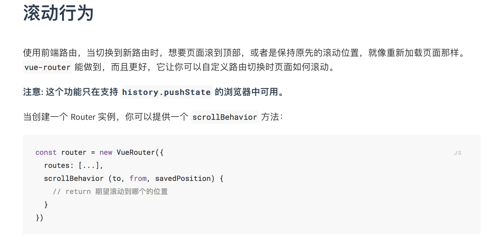

前言：
vue路由默认hash模式 —— 使用URL 的 hash 来模拟一个完整的 URL，于是当 URL 改变时，页面不会重新加载。
如果不想要很丑的 hash，我们可以用路由的 history 模式，这种模式充分利用 history.pushState API 来完成 URL 跳转而无须重新加载页面。1
2
3
4const router = new VueRouter({
mode: 'history',
routes: [...]
})
当你使用 history 模式时，URL 就像正常的 url，例如 http://yoursite.com/user/id，也好看！
不过这种模式要玩好，还需要后台配置支持。因为我们的应用是个单页客户端应用，如果后台没有正确的配置，当用户在浏览器直接访问 http://oursite.com/user/id 就会返回 404，这就不好看了。
所以呢，你要在服务端增加一个覆盖所有情况的候选资源：如果 URL 匹配不到任何静态资源，则应该返回同一个 index.html 页面，这个页面就是你 app 依赖的页面。
后端配置例子
Apache
1 | <IfModule mod_rewrite.c> |
nginx
1 | location / { |
原生 Node.js
1 | const http = require('http') |
history模式的优点:
1.url变成真正的url，url看上去更好看。1
2http://yoursite.com/#/a/b //hash模式
http://yoursite.com/a/b //history模式
2.可以使用vue-router的滚动行为，这个用来记忆进入其他页面之前的位置非常好用，配置一下就可以直接使用了，前提是开启histroy模式。

3.类似项目引入微信js-sdk的时候，一些操作是对url是有要求，url不能带上’#’，如果没有开启histroy模式，很可能会导致问题。
4.像vue-cli的配置，都是以路由开启history模式的标准来配置的（下面会讲到一个栗子），没有开启的话，自己要另外配置。
先hash模式，后histroy模式
先用hash模式部署项目到线上，然后再开启histroy模式，由此引发的一些问题。
1.找不到资源问题：
在hash模式下面，直接打包的话，会导致找不到css、js和图片资源，然后经过百度之后，做出了如下截图的配置操作，更改assetsPublicPath：’/‘为 assetsPublicPath：’./‘
在hash模式下，像上面那么配置就没有问题了。当时我还以为vue-cli配置有问题，实际上，人家才没有问题呢，是我们自己没有开启history模式的问题。
然后开启了histroy模式之后，因为我们之前更改了assetsPublicPath属性，所以要把那个.给去掉，改回来：assetsPublicPath：’/‘
2.请求带上路由，导致请求失败
正确的请求是：1
http:www.xxx.com/api/接口 //api是我通过proxyTable转发地址的代理名字
开启histroy模式之后：
在二层的路由里面会出现这种情况：1
2路由是：http:www.xxx.com/a/b
http:www.xxx.com/api/a/接口 //这就导致了请求失败，要把a也去掉才是正确的
解决方式是：
可以在全局请求中设置一个baseURL，这个baseURL就是项目的网站地址（http:www.xxx.com）,然后二层的路由也会自动去掉前面的a和b。
3.cookie问题
项目分为两层,从a登录，b那边刷新就会出现没有cookie的情况。1
2
3两层路由
http://yoursite.com/a
http://yoursite.com/b
这里是因为cookie能否拿到跟存储的路由位置是有关的，之前使用hash模式因为hash模式的urlhttp://yoursite.com/#/a/b，会统一存在http://yoursite.com下面。
而history模式cookie就会存在http://yoursite.com/a或者http://yoursite.com/b下面，另外一边就会没有cookiie。1
2
3
4
5解决办法：
不要分为两层，统一所有的路由都在一个路由地址下面。
在项目的路由的根地址path:'/'里面存cookie。
使用sessionStorage存信息，我就是用这个方法，使用方法。
sessionStorage只要在http://yoursite.com都可以访问的到，不管是存在a上面还是b上面。
总结
搭建Vue项目时，开启history模式，和后端沟通路由情况